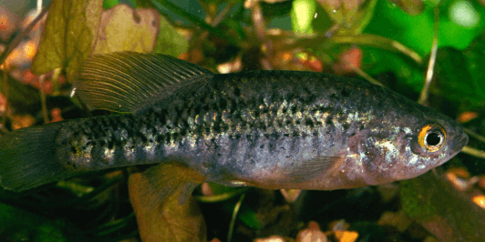

Systématique
- Ordre : Cyprinodontiformes
- Famille : Goodeidae
- Genre : Allotoca
- Espèce : A. meeki
- Auteur : Alvarez, 1959

Allotoca meeki est un petit poisson vivipare de la famille des Goodeidae, originaire des zones humides du Mexique. Cette espèce est nommée en l'honneur de l'ichtyologiste Seth Eugene Meek. Elle se caractérise par un corps comprimé latéralement et une robe relativement sobre, typique du genre, avec des teintes gris-vert à olivâtres. Une série de barres verticales sombres, plus ou moins marquées selon l'humeur et le sexe, orne souvent les flancs.
Les femelles atteignent une taille maximale de 5 à 6 cm, tandis que les mâles sont plus petits, dépassant rarement 4,5 cm. C'est l'un des membres les plus rares et les plus menacés du genre Allotoca, sa survie étant aujourd'hui très compromise dans son milieu d'origine.
En aquarium, Allotoca meeki est une espèce discrète, voire timide. Elle nécessite un environnement calme et n'apprécie pas la cohabitation avec des espèces trop vives ou agressives. Entre mâles, des parades de dominance peuvent avoir lieu, mais les affrontements physiques graves sont rares si l'espace est suffisant.
Il s'agit d'une espèce de "climat tempéré" qui ne tolère pas les eaux tropicales surchauffées. Dans la nature, elle fréquente les eaux calmes, les fossés et les zones marécageuses à la végétation dense. Sa maintenance requiert une eau très propre, car elle est particulièrement sensible aux polluants azotés et aux maladies fongiques en cas de mauvaise hygiène du bac.
Mode : Vivipare matrotrophe.
La reproduction est typique des Goodeinae : fécondation interne via l'andropode. Le développement embryonnaire est assuré par l'apport nutritif de la mère via les trophotaeniae. La gestation dure environ 55 à 60 jours à une température de 20-22°C.
Les portées sont généralement faibles, souvent comprises entre 5 et 15 alevins, ce qui rend la multiplication de l'espèce assez lente. Les jeunes naissent à une taille respectable (environ 10-12 mm) et peuvent immédiatement consommer des proies fines. Comme chez d'autres Allotoca, les parents peuvent se montrer prédateurs envers les nouveau-nés ; une végétation dense (mousses) est impérative.
Dimorphisme sexuel : Le mâle est plus petit, plus svelte et possède un andropode (nageoire anale modifiée). Ses couleurs peuvent être légèrement plus contrastées que celles de la femelle. La femelle est plus corpulente, avec une nageoire anale normale et un abdomen qui s'arrondit nettement lors de la gestation.
Espérance de vie : 3 à 4 ans. Le maintien d'une température fraîche et d'un repos hivernal est crucial pour atteindre cette longévité.
Allotoca meeki est endémique du bassin du lac Zirahuén et de la région d'Uruapan, dans l'État de Michoacán au Mexique. Son habitat naturel est constitué de sources, de petits étangs et de cours d'eau à courant très lent, souvent encombrés de végétation aquatique et de débris ligneux.
Ce biotope est situé en altitude, ce qui explique les besoins de l'espèce en eaux fraîches. Malheureusement, l'introduction de poissons prédateurs (Achigan à grande bouche), la pollution agricole et le drainage des zones humides ont conduit à une disparition quasi totale de l'espèce dans de nombreuses localités historiques. Elle est considérée comme l'un des Goodeids les plus proches de l'extinction.
Répartition

Origine naturelle :
- Mexique : État de Michoacán (Bassin du Rio Cupatitzio et Lac Zirahuén).
- Localité type : Zirahuén, Michoacán, Mexique.
Statut UICN : En danger critique (Critically Endangered). L'espèce est extrêmement rare en captivité et fait l'objet d'un suivi strict par les associations de sauvegarde.
Paramètres de maintenance
Température : 16 à 22 °C (idéalement 18-20°C). Ne pas maintenir au-dessus de 24 °C.
pH : 7,0 à 8,0.
GH : 8 à 15 °dGH.
Courant : Faible ou nul.
Volume conseillé : 60 à 80 L pour un petit groupe spécifique. Bac riche en plantes et cachettes.
Régime alimentaire
Régime : Insectivore et petit carnivore.
En aquarium, il privilégie les petites nourritures vivantes (daphnies, cyclops, artémias, micro-vers). Il peut accepter les aliments secs sous forme de paillettes ou micro-granulés s'il y est habitué, mais la nourriture vivante reste indispensable pour stimuler la reproduction et maintenir une bonne santé.